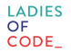
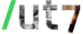
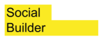

Pour qui ?
Le programme a été conçu pour offrir un espace idéal aux femmes souhaitant accéder aux métiers du développement informatique.
Vous êtes une fausse débutante, ou une autodidacte, vous avez peut-être fait du R, du Python ou du Processing ? Ou vous vous êtes amusée à créer votre site web en Javascript ?
Vous êtes en recherche d’emploi et vous souhaitez vous reconvertir ?
«À mon tour de programmer ?» se décline sur trois axes – formation technique, accompagnement au projet professionnel, inclusion et tutorat dans la communauté – pour vous aider à la réalisation de votre reconversion professionnelle.
La première session répond en 2017 aux besoins de 12 femmes du Grand Paris. Ouvert aux nouveaux organisatrices et organisateurs qui pourront dupliquer le format sur leur territoire, le format va croitre horizontalement chaque année pour former milles développeuses par an d'ici 2022.
L'agenda du programme
Le programme démarre en mars 2017 et se déroule jusqu'en novembre 2017.
L'agenda comporte l'ensemble des dates de formation et de suivi. Vous pouvez le parcourir pour vous familiariser avec les différentes sessions.
(certaines dates peuvent être amenées à changer)
Chaque évènement est expliqué plus en détail : il vous suffit de cliquer dessus pour accéder à cette explication.
Prochain évenement : Recontre de découverte du programme le 12 janvier à 19h00
Équipe
«À mon tour de programmer !» est un programme inédit, et pour le créer nous nous sommes regroupé à 4 partenaires. Cela nous permet de couvrir en un seul programme des besoins d'évolution professionelle qui sont souvent fragmentés et dispersés. C'est important pour un programme qui vise à faciliter l'inclusion de ses apprenantes dans le milieu du développement.
Voici celles et ceux qui ont conçu et animent le programme:

Ludwine Probst, Saskia Boma et les contributrices de la communauté Ladies of Code Paris
Ladies of Code Paris est une communauté de femmes travaillant dans les métiers du code comptant plus de 550 membres aux profils variés allant de développeuses (Web/Mobile,...), Data Scientist, DBA, CTO ou encore Manager Technique. Notre mission est de favoriser les partages de compétences techniques ainsi qu’un espace de networking entre nos membres.

Yannick François, Emmanuel Gaillot, et leurs collègues de /ut7
/ut7 est une coopérative autogérée par ses salariés, une société de conseil en informatique et un organisme agréé de formation. Elle héberge depuis 2008 un collectif de programmeurs expérimentés se réclamant du mouvement des méthodes agiles de développement logiciel, et disposant d'une très solide expertise sur le sujet.

Audrey Abitan, Emmanuelle Larroque, et l'équipe de Social Builder
Social Builder est une startup sociale qui se donne pour mission de concrétiser la mixité Femmes-Hommes dans les métiers et sphères de décision par l’innovation des pratiques, l’accompagnement des acteurs, la diffusion d’une culture de l’égalité femmes-hommes auprès des leaders de demain. Elle cible prioritairement l’économie numérique et est en phase d’essaimage sur tout le territoire français.
Julien Dorra de Port Parallèle
Société coopérative d’activités et d’emploi (CAE) dont l’objet est le soutien au démarrage et au développement d’activités économiques.